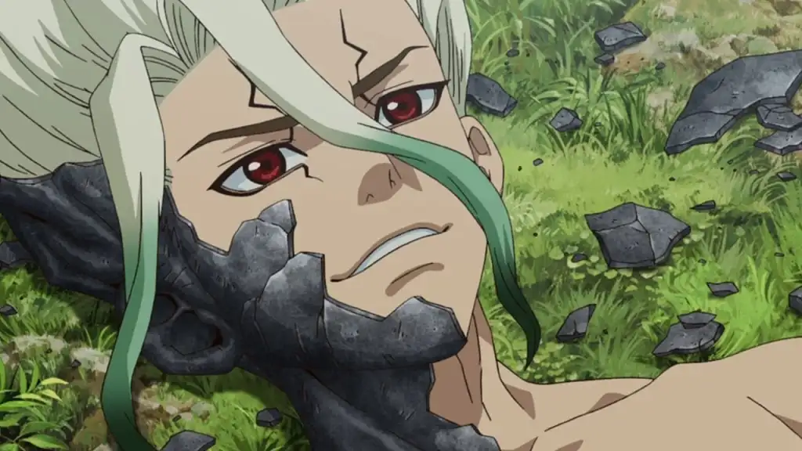
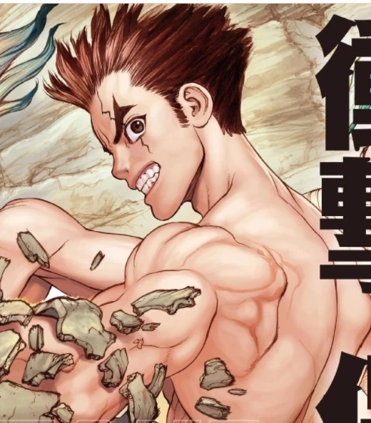
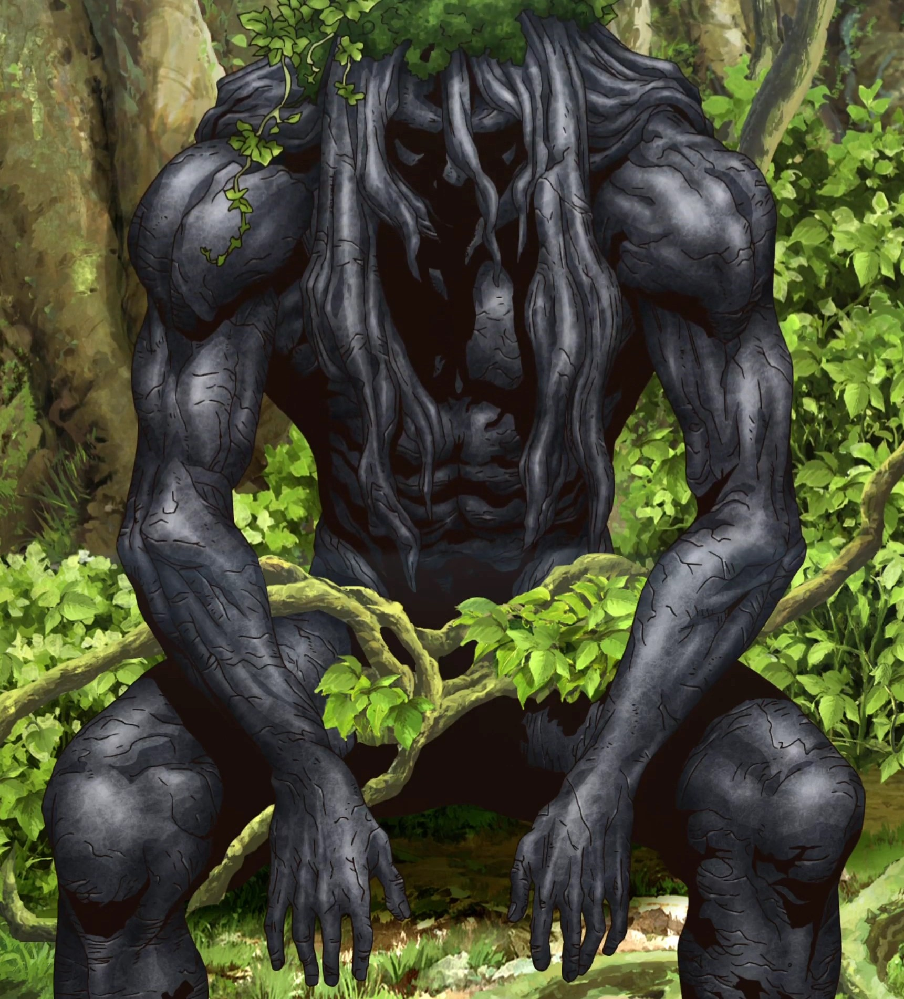
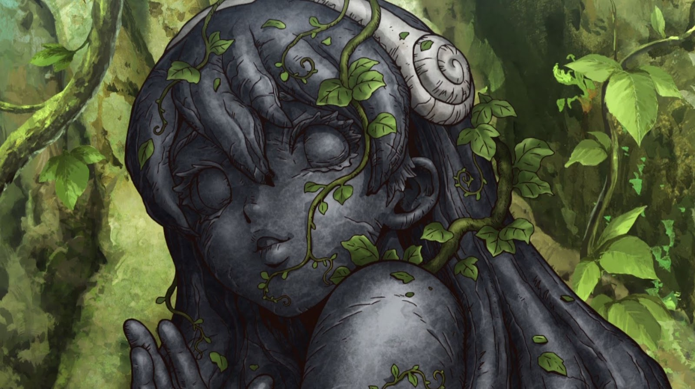

Dr. Stone começa com um fenômeno misterioso que transforma toda a humanidade em pedra. Milhares de anos depois, Senku Ishigami, um jovem extremamente inteligente e apaixonado por ciência, desperta. Ele descobre que o mundo como conhecemos entrou em colapso e decide usar seu conhecimento científico para reconstruir a civilização do zero.
Desperta de Taiju Oki
Senku se junta a Taiju Oki, seu amigo de infância, que também desperta. Juntos, eles começam a enfrentar os desafios de um mundo pós-apocalíptico, utilizando a ciência para recriar tecnologias e avançar a sociedade.
Despertar do Tsukasa
Tsukasa Shishio é um personagem central em Dr. Stone. Ele é despertado por Senku e Taiju devido à sua força e habilidades de combate, que seriam úteis para proteger o grupo e enfrentar os desafios do novo mundo. Tsukasa, conhecido como “O Primata Mais Forte do Ensino Médio”, rapidamente se torna um aliado poderoso, mas também um antagonista devido às suas visões divergentes sobre como a nova sociedade deve ser reconstruída.
Despertar da Yuzuriha
Yuzuriha Ogawa é uma das personagens principais de Dr. Stone e amiga de infância de Senku e Taiju. Ela é despertada por Taiju após 3.700 anos de petrificação, usando o fluido de revivificação criado por Senku. Após seu despertar, Yuzuriha se junta ao grupo de Senku e Taiju na missão de reconstruir a civilização. Ela é uma personagem habilidosa em costura e artesanato, o que se torna essencial para o grupo, especialmente na criação de roupas e na restauração de estátuas danificadas
